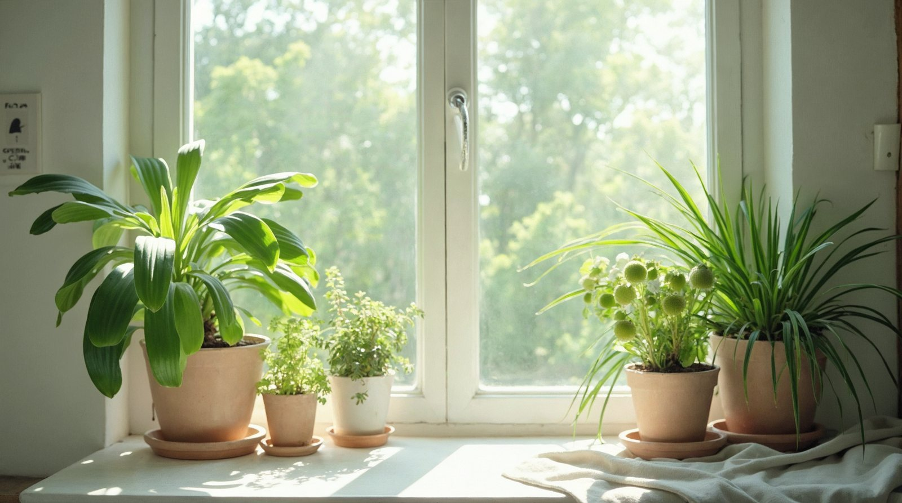

이종호 한의사 감수좋은꿈참사랑한의원 대표원장 (한의사 면허번호 19769)발행 2026-11-26 · 수정 2026-11-26
이 글의 차례
여름날 아이를 씻기다가 겨드랑이 아래에 좁쌀만 한 오돌토돌한 것이 서너 개 보입니다. 반짝이는 살색 알갱이인데, 가운데가 살짝 오목하게 들어가 있습니다. 그때는 땀띠인가 하고 넘겼는데, 몇 주 뒤에는 옆구리와 팔 안쪽까지 늘어나 있습니다. 놀이터 친구 엄마가 "그거 물사마귀예요, 번져요"라고 말해 줍니다.
물사마귀는 아이를 키우는 집에서 꽤 흔하게 만나는 피부 증상입니다. 아프지 않고 대개 크게 가렵지도 않지만, 하나둘 늘어나는 모습을 보면 부모님 마음이 조급해집니다. 떼어 내야 하는지, 그냥 두면 저절로 없어지는지, 수영장에 보내도 되는지, 동생에게 옮지는 않는지 질문이 꼬리를 뭅니다.
물사마귀의 정식 이름은 전염성 물렁종입니다. 바이러스가 피부 겉층에 들어가 작은 알갱이를 만드는 것으로, 손발에 생기는 딱딱한 사마귀와는 원인 바이러스가 다릅니다. 많은 경우 아이의 면역이 바이러스를 알아보면서 몇 달에서 길게는 1~2년 사이에 저절로 사라집니다.
그래서 물사마귀는 '어떻게 없앨까'와 함께 '어떻게 덜 번지게 하며 기다릴까'를 함께 생각하는 증상입니다. 이 글에서는 물사마귀가 왜 생기고 번지는지, 집에서 무엇을 살피면 좋은지, 피부과와 한의원에서는 각각 무엇을 함께 볼 수 있는지 정리해 보겠습니다.
물사마귀는 어떤 모습인가요
물사마귀는 1~5밀리미터 정도의 작고 둥근 알갱이로, 살색이나 연분홍색을 띠며 표면이 매끈하고 반짝입니다. 가장 큰 특징은 가운데가 배꼽처럼 살짝 오목하게 들어가 있다는 점입니다. 눌러 보면 하얀 치즈 같은 내용물이 나오기도 하는데, 그 안에 바이러스가 들어 있어 짜내는 것은 권하지 않습니다.
아이들은 겨드랑이와 옆구리, 배, 팔 안쪽, 허벅지 안쪽처럼 피부가 부드럽고 서로 맞닿는 곳에 잘 생깁니다. 한 자리에 여러 개가 무리 지어 나거나, 긁은 자국을 따라 줄지어 생기기도 합니다. 얼굴이나 눈꺼풀 가까이에 생기는 경우도 있습니다.
물사마귀가 사라질 무렵에는 주변이 빨갛게 붓고 가려워지기도 합니다. 부모님은 덧난 것으로 보고 놀라시지만, 많은 경우 면역이 바이러스를 알아보고 정리하는 과정에서 생기는 반응입니다. 이 시기에 긁지 않도록 도와주시는 것이 중요합니다.
왜 아이에게 물사마귀가 생기고 번질까요
물사마귀 바이러스는 피부와 피부가 직접 닿거나, 수건과 목욕 스펀지, 장난감처럼 함께 쓰는 물건을 통해 옮습니다. 아이들은 서로 몸을 맞대고 놀고, 수영장이나 목욕탕에서 물건을 함께 쓰는 일이 많아 쉽게 옮습니다.
- 친구나 형제자매와 피부를 맞대고 노는 경우
- 수건, 목욕 스펀지, 튜브 같은 물건을 함께 쓰는 경우
- 아토피 피부염으로 피부 장벽이 약해져 있는 경우
- 물사마귀를 긁거나 뜯어 손을 통해 다른 자리로 옮기는 경우
- 땀이 많이 차고 피부가 서로 맞닿는 자리에 생긴 경우
- 피곤하고 잠이 부족해 몸이 지친 시기
이 가운데 가장 크게 번지게 하는 것은 긁기입니다. 물사마귀를 긁거나 뜯으면 그 안의 바이러스가 손톱과 손끝에 묻어 다른 자리로 옮겨 갑니다. 그래서 물사마귀 관리의 첫걸음은 긁지 않게 돕는 일입니다.
아토피가 있는 아이는 물사마귀가 더 넓게 번지고 오래가는 경우가 많습니다. 피부가 건조하고 가려워 자주 긁는 데다, 피부 장벽이 약해 바이러스가 쉽게 자리를 잡기 때문입니다. 그래서 아토피가 함께 있는 아이라면 보습과 가려움 관리를 함께 챙기는 것이 물사마귀 관리이기도 합니다.
물사마귀와 다른 사마귀, 비슷한 피부 증상은 어떻게 다른가요
손가락이나 발바닥에 생기는 보통 사마귀는 표면이 거칠고 딱딱하며, 발바닥 사마귀는 걸을 때 아프기도 합니다. 원인 바이러스가 달라서 치료 방법도 다릅니다. 물사마귀는 표면이 매끈하고 가운데가 오목하며, 손발보다는 몸통과 팔다리 안쪽에 잘 생깁니다.
땀띠는 땀이 차는 자리에 작고 붉은 좁쌀 같은 발진이 모여 나고, 시원하게 해 주면 하루 이틀 사이에 가라앉습니다. 모낭염은 털구멍을 따라 붉은 뾰루지가 생기고 가운데에 고름이 잡히기도 합니다. 헷갈릴 때는 사진을 찍어 두셨다가 피부과에서 확인받으시면 됩니다.
떼어 내야 하나요, 기다려도 되나요
부모님들이 가장 많이 고민하시는 질문입니다. 물사마귀는 저절로 사라지는 경우가 많아서, 개수가 적고 아이가 불편해하지 않는다면 지켜보는 방법도 있습니다. 다만 사라지기까지 몇 달에서 1~2년이 걸릴 수 있고, 그사이 번지거나 다른 아이에게 옮을 수 있다는 점을 함께 생각해야 합니다.
개수가 빠르게 늘거나, 아토피로 자꾸 긁어 번지거나, 단체 생활이나 수영 때문에 신경이 쓰인다면 피부과에서 떼어 내는 치료를 상의해 볼 수 있습니다. 작은 기구로 알갱이를 긁어내거나, 얼리거나, 약을 발라 염증을 일으켜 떨어지게 하는 방법 등이 있습니다.
아이 나이와 개수, 자리, 아이가 치료를 얼마나 견딜 수 있는지에 따라 피부과 선생님과 상의해 정하시면 됩니다.
떼어 낸 뒤에도 새로 생기는 경우가 있어 실망하실 수 있습니다. 이미 피부에 들어와 있지만 아직 눈에 보이지 않던 것이 뒤늦게 올라오기 때문입니다. 한 번에 끝나지 않을 수 있다는 것을 미리 알고 계시면 덜 지치십니다. 치료 뒤에도 긁지 않기와 개인 수건 쓰기는 그대로 이어 가 주세요.
목욕과 수영은 어떻게 하나요
물사마귀가 있다고 해서 목욕을 피할 필요는 없습니다. 오히려 미지근한 물로 짧게 씻기고 순한 보습제를 바르는 것이 피부 장벽을 지키는 데 도움이 됩니다. 때를 밀거나 스펀지로 세게 문지르는 것은 물사마귀를 터뜨려 번지게 할 수 있으니 피해 주세요.
수건은 아이 것을 따로 쓰고, 형제자매와 함께 목욕할 때는 물사마귀가 있는 아이를 나중에 씻기거나 따로 씻기는 것이 좋습니다. 목욕 스펀지와 장난감도 따로 두시면 집 안에서 번지는 것을 줄이는 데 보탬이 됩니다.
수영장은 기관이나 시설마다 기준이 달라서 미리 확인해 보세요. 수영을 하게 된다면 물사마귀가 있는 자리를 방수 밴드로 가리고, 수건과 튜브, 물안경 같은 물건은 다른 아이와 함께 쓰지 않도록 해 주세요.
아이가 긁지 않게 하려면 어떻게 하나요
긁지 말라는 말만으로는 아이 손이 멈추지 않습니다. 손톱을 짧고 둥글게 깎아 주고, 물사마귀가 많은 자리는 부드러운 면 옷으로 덮어 주세요. 가려울 때는 긁는 대신 차가운 물수건을 잠시 대 주거나, 그 자리를 손바닥으로 가볍게 눌러 주는 방법을 알려 주시면 좋습니다.
잠든 사이에 긁는 아이라면 잠옷을 긴소매와 긴바지로 입히고, 방을 너무 덥지 않게 해 주세요. 땀이 차면 가려움이 커지기 쉽습니다. 아토피가 있다면 보습제를 하루 두 번 이상 꾸준히 발라 피부가 덜 건조하게 해 주세요.
긁지 않고 잘 참은 날에는 아이를 칭찬해 주세요. 달력에 스티커를 붙이는 것처럼 눈에 보이는 작은 보상이 아이에게는 큰 힘이 됩니다.
형제자매가 있는 집에서는 어떻게 하나요
물사마귀는 집 안에서 가장 많이 옮습니다. 형제자매가 함께 씻고, 한 이불에서 뒹굴며, 수건과 장난감을 함께 쓰니까요. 한 아이에게 물사마귀가 생겼다면 다른 아이의 겨드랑이와 배, 팔 안쪽도 한 번씩 살펴봐 주세요. 일찍 발견하면 번지기 전에 관리를 시작할 수 있습니다. 부모님 피부에도 옮을 수 있으니, 아이를 씻긴 뒤에는 손을 한 번 더 씻어 주세요.
다만 형제를 떼어 놓고 지내게 할 필요까지는 없습니다. 개인 수건과 목욕 순서, 물사마귀 자리를 옷으로 덮는 정도만 지켜도 옮는 일을 꽤 줄일 수 있습니다. 동생에게 옮았다고 큰아이를 탓하는 말은 아이 마음에 오래 남을 수 있으니 조심해 주세요.
아이 마음은 어떻게 살피나요
조금 큰 아이들은 친구가 "그거 뭐야?" 하고 물으면 몸을 숨기거나 수영과 체육 시간을 피하려 하기도 합니다. 아이에게는 물사마귀가 아이들에게 흔한 피부 증상이고, 시간이 지나면 사라지는 경우가 많으며, 깨끗하지 않아서 생기는 것이 아니라는 것을 차분히 설명해 주세요.
피부과에서 떼어 내는 치료를 받을 때 아이가 무서워한다면, 치료 전에 어떤 느낌일지 미리 이야기해 주고 끝난 뒤에는 잘 견딘 것을 충분히 알아봐 주세요. 치료 경험이 무서운 기억으로 남지 않아야 다음 진료도 수월해집니다. 치료 뒤 그 자리를 자꾸 만지지 않도록 함께 약속해 두시면 좋습니다.
먼저 이렇게 여쭙니다
처음 오시면 대략 이런 순서로 여쭙니다.
- 물사마귀를 언제 처음 발견했고, 개수는 어떻게 변하고 있나요?
- 주로 어디에 생기나요? 얼굴이나 눈꺼풀 가까이에도 있나요?
- 가려워서 긁거나 뜯는 일이 있나요?
- 아토피나 피부 건조함이 있나요?
- 형제자매나 친구 가운데 물사마귀가 있는 아이가 있나요?
- 피부과에서 진단이나 제거 치료를 받은 적이 있나요?
잠과 입맛, 대변, 감기를 얼마나 자주 앓는지도 함께 여쭙습니다.
일상에서 먼저 해 볼 수 있는 것
물사마귀를 직접 없애는 것보다 덜 번지게 하고, 피부를 편안하게 하는 데 마음을 쓰시길 권합니다.
- 손톱을 짧게 깎고, 물사마귀를 짜거나 뜯지 않기
- 수건과 목욕 스펀지는 아이 것을 따로 쓰기
- 미지근한 물로 짧게 씻기고 순한 보습제 바르기
- 물사마귀가 많은 자리는 부드러운 면 옷으로 덮어 주기
- 형제자매와 함께 목욕할 때는 순서를 나누거나 따로 씻기기
- 한 달에 한 번 같은 자리를 사진으로 찍어 두기
인터넷에서 보는 민간요법이나 어른용 사마귀 제품을 아이 피부에 쓰는 것은 권하지 않습니다. 아이 피부에는 자극이 커서 화상처럼 상처가 남을 수 있습니다.
한의원에서 함께 살필 수 있는 경우
- 아토피가 함께 있어 물사마귀가 자꾸 번지고 가려운 경우
- 물사마귀가 오래 사라지지 않고 감기도 자주 앓는 경우
- 가려움 때문에 잠을 설치고 자주 깨는 경우
- 피부가 늘 건조하고 쉽게 붉어지는 경우
- 피부과 치료를 받으며 아이의 전체 컨디션을 함께 보고 싶은 경우
좋은꿈참사랑한의원에서는 먼저 아래 '먼저 확인이 필요한' 신호가 없는지부터 봅니다. 그다음 맥을 짚고 피부와 혀, 배를 살피며 잠과 입맛, 대변을 여쭙습니다. 진찰한 내용을 바탕으로 생활에서 바꿔 볼 것 하나와 함께 아이 몸에 맞는 관리를 상의합니다.
한약을 상의할 때는 아이가 바르거나 먹는 약을 모두 확인하고 신중하게 정합니다. 침을 무서워하는 아이에게 억지로 하지 않고, 아이가 받아들일 수 있는 방법부터 찾습니다. 물사마귀의 진단과 제거 치료는 피부과와 나란히 가시면 됩니다.
이렇게 기록해 오시면 상담이 쉬워집니다
물사마귀는 한 달 단위로 변화를 보는 것이 좋습니다. 한 달에 한 번, 같은 자리를 같은 조명에서 찍어 두세요.
- 한 달에 한 번 같은 조건에서 찍은 사진
- 대략적인 개수와 새로 생긴 자리
- 빨갛게 붓거나 가려웠던 때
- 긁은 날과 잠을 설친 날
- 피부과 치료를 받은 날과 바른 약
- 감기나 아토피가 심했던 때
사진을 나란히 놓으면 늘어나는 시기인지, 줄어드는 시기인지가 보입니다. 그 흐름이 떼어 낼지 더 기다릴지를 정하는 데도 도움이 됩니다.

번지지 않게, 조급하지 않게
물사마귀는 눈에 보이니 부모님 마음이 계속 쓰이는 증상입니다. 하지만 아이에게는 대개 아프지 않은 작은 알갱이일 뿐입니다. 부모님이 자꾸 들여다보고 만지면 아이도 그 자리를 신경 쓰고 만지게 됩니다.
이번 주에는 하나만 해 보세요. 아이 수건과 목욕 스펀지를 따로 정해 두기. 다음에 오시면 사진을 함께 펼쳐 놓고, 아이의 피부와 잠이 어떻게 지내고 있는지부터 이야기 나누겠습니다.
이런 증상은 먼저 확인이 필요합니다
- 물사마귀 주변이 크게 붓고 빨갛게 번지며 뜨겁고 아프고, 고름과 함께 열이 나는 경우
- 눈꺼풀 가장자리에 생긴 뒤 눈이 충혈되고 아파하거나 잘 안 보인다고 하는 경우
이런 신호가 있으면 한의원보다 가까운 병원이나 응급실을 먼저 찾으세요.
함께 읽으면 좋은 글
- 손가락과 발바닥에 오돌토돌 올라와 자꾸 번지는 사마귀는 어떻게 살피나요?
- 아이 피부가 건조하고 밤마다 긁어서 깨는 소아 아토피 피부염은 어떻게 살피나요?
- 아이가 감기에 자주 걸리고 코가 막힐 때는 어떤 점을 살펴보나요?
- 아이가 잠투정이 심하고 자다가 자주 깰 때는 어떤 점을 살펴보나요?
- 밥 먹을 때나 잠들 때 땀을 유난히 많이 흘리는 아이는 무엇을 살피나요?

여쭙는 것
- 물사마귀를 언제 처음 발견했고, 개수는 어떻게 변하고 있나요?
- 주로 어디에 생기나요? 얼굴이나 눈꺼풀 가까이에도 있나요?
- 가려워서 긁거나 뜯는 일이 있나요?
생활에서 해 볼 것
- 손톱을 짧게 깎고, 물사마귀를 짜거나 뜯지 않기
- 수건과 목욕 스펀지는 아이 것을 따로 쓰기
- 미지근한 물로 짧게 씻기고 순한 보습제 바르기
한의원에서 함께 살필 것
- 아토피가 함께 있어 물사마귀가 자꾸 번지고 가려운 경우
- 물사마귀가 오래 사라지지 않고 감기도 자주 앓는 경우
- 가려움 때문에 잠을 설치고 자주 깨는 경우
먼저 확인이 필요한 신호
- 물사마귀 주변이 크게 붓고 빨갛게 번지며 뜨겁고 아프고, 고름과 함께 열이 나는 경우
- 눈꺼풀 가장자리에 생긴 뒤 눈이 충혈되고 아파하거나 잘 안 보인다고 하는 경우
한눈에 보는 표
| 구분 | 핵심 |
|---|---|
| 여쭙는 것 | 물사마귀를 언제 처음 발견했고, 개수는 어떻게 변하고 있나요? 주로 어디에 생기나요? 얼굴이나 눈꺼풀 가까이에도 있나요? |
| 생활에서 해 볼 것 | 손톱을 짧게 깎고, 물사마귀를 짜거나 뜯지 않기 수건과 목욕 스펀지는 아이 것을 따로 쓰기 |
| 한의원에서 함께 살필 것 | 아토피가 함께 있어 물사마귀가 자꾸 번지고 가려운 경우 물사마귀가 오래 사라지지 않고 감기도 자주 앓는 경우 |
| 먼저 확인이 필요한 신호 | 물사마귀 주변이 크게 붓고 빨갛게 번지며 뜨겁고 아프고, 고름과 함께 열이 나는 경우 눈꺼풀 가장자리에 생긴 뒤 눈이 충혈되고 아파하거나 잘 안 보인다고 하는 경우 |
자주 묻는 질문
물사마귀는 저절로 없어지나요?
많은 경우 몇 달에서 1~2년 사이에 저절로 사라집니다. 다만 그사이 번지거나 옮을 수 있어서, 개수가 빠르게 늘거나 아토피로 자꾸 긁는다면 피부과에서 제거 치료를 상의해 보시길 권합니다.
물사마귀가 있으면 어린이집에 보내도 되나요?
기관마다 기준이 다를 수 있어 미리 확인해 보세요. 보내게 된다면 물사마귀가 있는 자리를 옷으로 덮고, 수건과 개인 물건을 따로 쓰게 해 주시면 좋습니다.
물사마귀를 짜서 없애도 되나요?
짜거나 뜯으면 안의 바이러스가 손에 묻어 다른 자리로 번질 수 있고 상처가 남을 수 있어 권하지 않습니다. 떼어 내는 치료는 피부과에서 받으시길 권합니다.
물사마귀가 있는 아이도 한약을 먹을 수 있나요?
바르거나 먹는 약을 모두 확인하고 신중하게 정합니다. 아토피나 잦은 감기, 잠처럼 함께 살펴볼 부분이 있으면 그것도 함께 상의합니다.
좋은꿈참사랑한의원은 재진 때 지난번 이야기부터 이어서 여쭙니다. 진료시간과 예약은 오시는 길에서 확인하세요.
어디서 상담받을 수 있나요?
좋은꿈참사랑한의원은 서울 동작구 만양로2길 2 신성빌딩 3층·5층(서울 동작구 상도동, 7호선 상도역 3번 출구 근처)에 있습니다. 한의사 3명(이종호 대표원장, 조영기 수석진료원장, 정원영 진료원장)이 진료합니다. 진료시간은 평일 09:30~20:00(점심 13:00~14:00), 토·일·공휴일 09:30~15:00이며, 방문 전 전화로 확인을 권합니다. 예약은 네이버 예약, 카카오톡 상담, 전화 02-815-7510로 받습니다.
이 글은 일반적인 건강 정보이며 개인의 진단이나 치료를 대신하지 않습니다. 증상이 있거나 복용 중인 약이 있다면 진료를 통해 확인하세요. 치료 효과는 개인마다 다를 수 있습니다.
작성 기준: 일반적으로 알려져 있는 건강 정보를 참고해 정리했습니다(대표원장 감수). 증상 기록은 1~2주 동안 하루 1회, 비슷한 시간에 적어 오시면 지난 상태와 비교하기 쉽습니다.